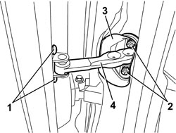

7005A28 FRONT SIDE DOOR LIMITER - R.R.
- Path
- Procedures > 70 FITTINGS > 7005 PASSENGER COMPARTMENT FRONT SIDE DOORS > 7005A FRONT DOOR ASSEMBLY > 7005A28 FRONT SIDE DOOR LIMITER - R.R.
- Kind
- repair procedure (removal / refitting; the operation number is the code)
- Applies to
- all engines; all production periods
- Interactive page
- https://sloeber94.github.io/elrnDB-aBrrSpdr/en/#/946002493
Applies to: all engines; all production periods
 Removing
Removing
 Refitting
RefittingOp. 7040A04 DASHBOARD LOWER TRIM - R.R.
1. Unscrew the bolts on the door.
2. Unscrew the nuts on the body.
3. Release the seal.
4. Remove the limiter by extracting it from inside the car.

Applies to: all engines; all production periods
Refitting
Removing- Check that the limiter and the seal are not damaged.
- Place the limiter in its seat.
- Tighten the nuts to the body to the recommended torque.
Component | Fastening | dia | Value (daNm) | Validity |
|---|---|---|---|---|
DOOR DETENT LINK | Nut | M6 | 0.7 ÷ 1.1 |
- Fit the seal.
- Tighten the door bolts to the specified torque.
Component | Fastening | dia | Value (daNm) | Validity |
|---|---|---|---|---|
DOOR DETENT LINK | Bolt | M6x22 | 0.7 ÷ 1.1 |
- Check the operation of the limiter.